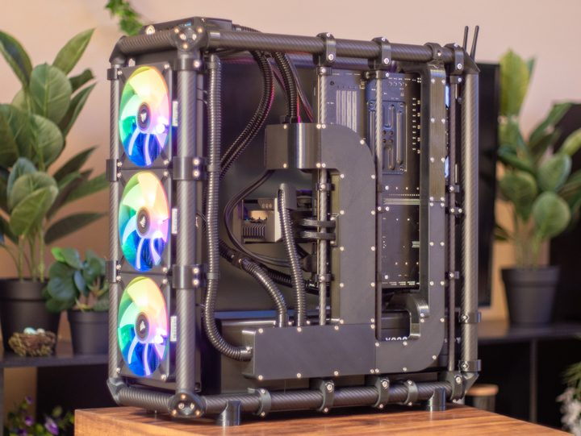
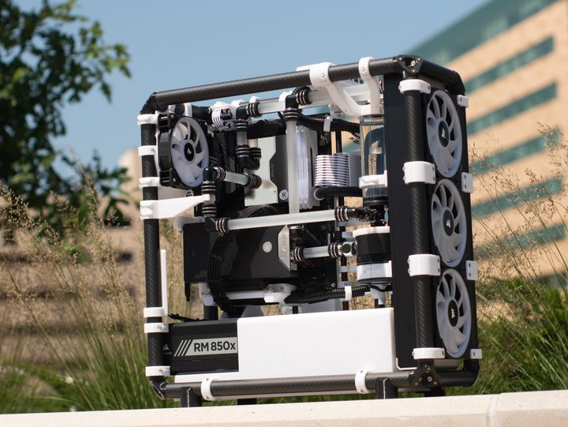
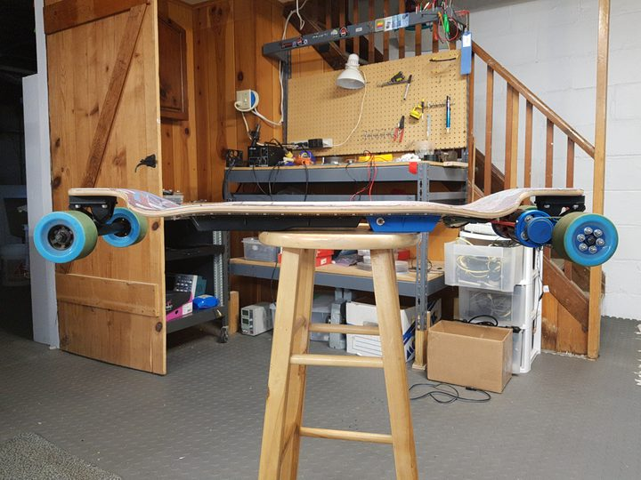
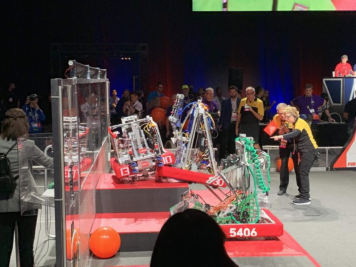
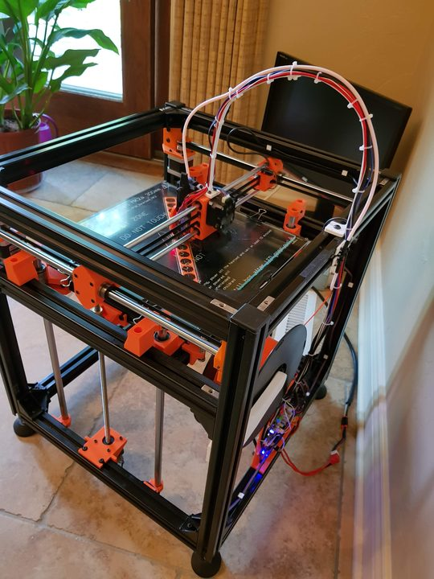
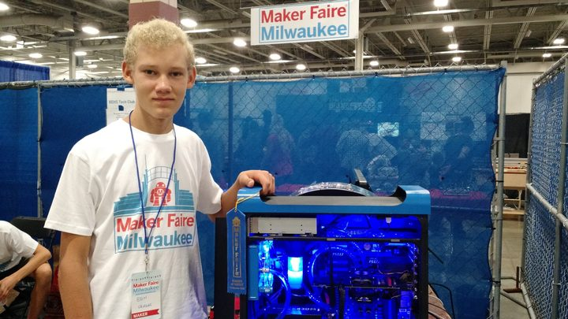
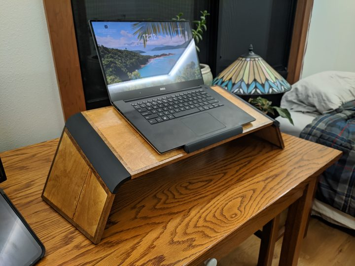

Mechanical design · Electronics · Software
I design things in CAD, then build the boards, firmware and tools that make them work.
Hands-on engineer from Wisconsin with 10+ years in Autodesk Inventor, a long run of custom 3D printers, PCs and electric vehicles, and recent work across KiCad, embedded firmware and C++.
- Autodesk Inventor
- CSWA
- KiCad
- FDM / SLS / sheet metal
- RepRapFirmware
- ESP32
- C++ / Unreal
- Python
- Rapid prototyping

Selected work

2026 · in progress
Modular Smart Light Panels
Edge-lit hexagon, square and triangle panels that snap together in any layout, work out their own arrangement, and play effects mapped to the room rather than along a strip.
- KiCad
- PCB design
- CAN bus
- ESP32

2017 – 2025
Carbon 3D Modular PC Chassis
A parametric PC chassis system built from carbon fiber tubes and clamp-on 3D-printed modules. It started as an AMD-sponsored build and has gone through five generations of builds.
- Autodesk Inventor
- Parametric design
- Carbon fiber
- FDM

2016 – 2021
Electric Longboards
Three generations of DIY electric longboards with printed motor mounts and enclosures. One out-powered the top Boosted Board at under half the price.
- Battery packs
- BLDC drive
- 3D-printed enclosures
- Autodesk Inventor

2023 – 2026
V-Labs Ender 3 & RRFarm
A conversion kit that makes the world's most common budget 3D printer far more reliable and about 3× faster, plus a web app for running a farm of them.
- Autodesk Inventor
- RepRapFirmware
- Python
- FastAPI
2026
Satisfactory Mods
More than a dozen C++ mods for the factory game Satisfactory, including signal-free train traffic control, demand-driven train dispatch and fixes for server networking bugs.
- C++
- Unreal Engine
- Multiplayer networking
- Algorithms

2020 – 2021
UWRF Lunabotics Rover
A NASA moon-mining rover that my roommate and I started at UW–River Falls. I did the mechanical design: closed-loop hub-motor wheels, a deployable wheelbase and a bucket-chain excavator.
- Autodesk Inventor
- BLDC / ODrive
- Gearbox design
- Mechanisms

2017 – 2019
BEAST Robotics: Suction End Effector
Mechanical lead for the end-effector team on FIRST team 2202. I designed a suction-cup effector that captured both game pieces with one system, and won an engineering ingenuity award.
- FIRST Robotics
- Autodesk Inventor
- Molding
- PETG

2017 – 2019
HyperCube Evolution Printer
A CoreXY 3D printer I built and reworked, with my first RepRapFirmware setup and a balanced direct-drive printhead I designed and published.
- CoreXY
- RepRapFirmware
- Duet
- Printhead design

2012 – 2017
Early Work: Maker Faire, Clearwater, Rockets
Where it started: a Vrakas Labs booth and 3D-modeling seminars at Maker Faire Milwaukee, a transparent water-cooled PC, high-power rockets and a DIY e-bike.
- Maker Faire
- Teaching
- Laser cutting
- Water cooling

2016 – 2025
Small Designs & Published Models
Everyday engineering: a magnetic-hinge laptop stand, a guided knife sharpener, a replacement headset clasp that users rate 5 stars, cable chains and a camera gimbal.
- Product design
- FDM
- Woodworking
- Printables
Experience
Micronics LLC · Middleton, WI
Independent contractor · Jul 2023 – Jun 2024
One of three people at a hardware startup, designing and building product prototypes from sheet metal, FDM and SLS parts and off-the-shelf components. Sourced and tested hardware from global suppliers, and worked on systems automation and PLCs, G-code scripting, FEA and modal analysis, all on a rapid design-test cycle. The company was acquired by Formlabs.
Space Science Institute · Student intern
2017 – 2019
Designed and built imaging targets and camera mounts used to test and calibrate software for the Mastcam-Z instrument on NASA's Mars 2020 rover.
Freelance CAD & custom builds
2011 – 2019
Through Fiverr and local clients: designed injection-molded components for real products, modeled replacement parts and delivered 3D printing and prototyping work. Designed and built custom computers and enclosures, some sponsored by AMD and featured on its social channels.
Education
- Madison Area Technical College, Mechanical Design program
- University of Wisconsin–River Falls, two years of a dual-degree program (B.S. Applied Physics + B.S. Mechanical Engineering): statics, dynamics, calculus, mechanics of materials
- CSWA (Certified SOLIDWORKS Associate)
About
It started with Lego, building whatever I imagined instead of following the instructions, and grew into my parents' garage and the aisles of the hardware store. Summers were for projects with my older brother: he handled the electronics and I handled the mechanics.
At 14 I got a PrintrBot Simple. I'd been using Autodesk Inventor since sixth grade, so suddenly my models could become real parts. The printer needed so much fixing that I spent as much time designing upgrades for it as using it, which led me into the RepRap community and a long line of printers I've built and modified since.
I showed 3D modeling at a booth and gave seminars at Maker Faire Milwaukee (2012–2016) under the name Vrakas Labs (V-Labs). I was mechanical lead on FIRST Robotics team 2202, where I won an engineering ingenuity award, and co-captained a regional-champion Rockets for Schools team.
Elsewhere
- GitHub: github.com/benvrakas: hardware repos and Satisfactory mods
- Printables: V-Labs: published 3D-printable designs
- Thingiverse: benvrakas: older designs, 2014–2022